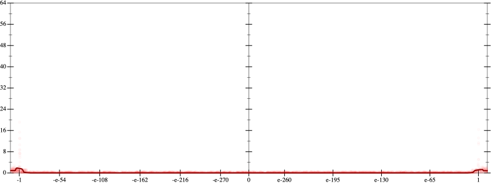
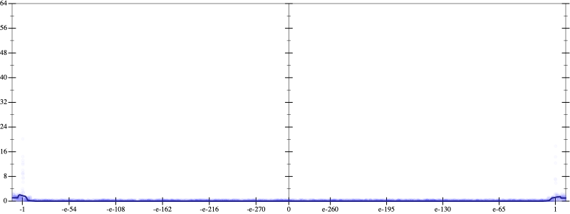
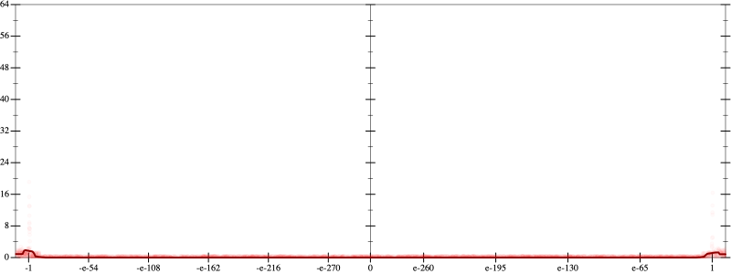
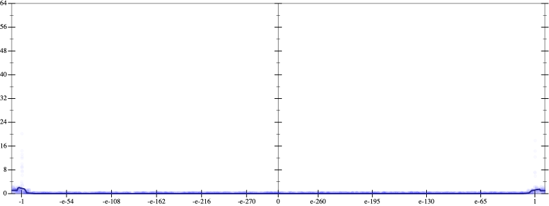

Initial program 0.1
\[\left(\left(\left(\left(\left(\left(\left(3.33847 \cdot x + -169.14917 \cdot \left(\left(x \cdot x\right) \cdot x\right)\right) + 2486.492798 \cdot \left(\left(\left(\left(x \cdot x\right) \cdot x\right) \cdot x\right) \cdot x\right)\right) + -16339.809814 \cdot \left(\left(\left(\left(\left(\left(x \cdot x\right) \cdot x\right) \cdot x\right) \cdot x\right) \cdot x\right) \cdot x\right)\right) + 56735.450745 \cdot \left(\left(\left(\left(\left(\left(\left(\left(x \cdot x\right) \cdot x\right) \cdot x\right) \cdot x\right) \cdot x\right) \cdot x\right) \cdot x\right) \cdot x\right)\right) + -111407.794189 \cdot \left(\left(\left(\left(\left(\left(\left(\left(\left(\left(x \cdot x\right) \cdot x\right) \cdot x\right) \cdot x\right) \cdot x\right) \cdot x\right) \cdot x\right) \cdot x\right) \cdot x\right) \cdot x\right)\right) + 124262.539673 \cdot \left(\left(\left(\left(\left(\left(\left(\left(\left(\left(\left(\left(x \cdot x\right) \cdot x\right) \cdot x\right) \cdot x\right) \cdot x\right) \cdot x\right) \cdot x\right) \cdot x\right) \cdot x\right) \cdot x\right) \cdot x\right) \cdot x\right)\right) + -73374.071045 \cdot \left(\left(\left(\left(\left(\left(\left(\left(\left(\left(\left(\left(\left(\left(x \cdot x\right) \cdot x\right) \cdot x\right) \cdot x\right) \cdot x\right) \cdot x\right) \cdot x\right) \cdot x\right) \cdot x\right) \cdot x\right) \cdot x\right) \cdot x\right) \cdot x\right) \cdot x\right)\right) + 17804.002533 \cdot \left(\left(\left(\left(\left(\left(\left(\left(\left(\left(\left(\left(\left(\left(\left(\left(x \cdot x\right) \cdot x\right) \cdot x\right) \cdot x\right) \cdot x\right) \cdot x\right) \cdot x\right) \cdot x\right) \cdot x\right) \cdot x\right) \cdot x\right) \cdot x\right) \cdot x\right) \cdot x\right) \cdot x\right) \cdot x\right)\]
Taylor expanded around inf 0.1
\[\leadsto \left(\left(\left(\left(\left(\left(\left(3.33847 \cdot x + -169.14917 \cdot \left(\left(x \cdot x\right) \cdot x\right)\right) + 2486.492798 \cdot \left(\left(\left(\left(x \cdot x\right) \cdot x\right) \cdot x\right) \cdot x\right)\right) + -16339.809814 \cdot \left(\left(\left(\left(\left(\left(x \cdot x\right) \cdot x\right) \cdot x\right) \cdot x\right) \cdot x\right) \cdot x\right)\right) + 56735.450745 \cdot \left(\left(\left(\left(\left(\left(\left(\left(x \cdot x\right) \cdot x\right) \cdot x\right) \cdot x\right) \cdot x\right) \cdot x\right) \cdot x\right) \cdot x\right)\right) + -111407.794189 \cdot \left(\left(\left(\left(\left(\left(\left(\left(\left(\left(x \cdot x\right) \cdot x\right) \cdot x\right) \cdot x\right) \cdot x\right) \cdot x\right) \cdot x\right) \cdot x\right) \cdot x\right) \cdot x\right)\right) + \color{blue}{124262.539673 \cdot {x}^{13}}\right) + -73374.071045 \cdot \left(\left(\left(\left(\left(\left(\left(\left(\left(\left(\left(\left(\left(\left(x \cdot x\right) \cdot x\right) \cdot x\right) \cdot x\right) \cdot x\right) \cdot x\right) \cdot x\right) \cdot x\right) \cdot x\right) \cdot x\right) \cdot x\right) \cdot x\right) \cdot x\right) \cdot x\right)\right) + 17804.002533 \cdot \left(\left(\left(\left(\left(\left(\left(\left(\left(\left(\left(\left(\left(\left(\left(\left(x \cdot x\right) \cdot x\right) \cdot x\right) \cdot x\right) \cdot x\right) \cdot x\right) \cdot x\right) \cdot x\right) \cdot x\right) \cdot x\right) \cdot x\right) \cdot x\right) \cdot x\right) \cdot x\right) \cdot x\right) \cdot x\right)\]
Applied simplify0.1
\[\leadsto \color{blue}{\left(\left({x}^{13} \cdot 124262.539673 + \left({x}^{3} \cdot \left({x}^{3} \cdot {x}^{3}\right)\right) \cdot \left(56735.450745 + x \cdot \left(x \cdot -111407.794189\right)\right)\right) + \left(\left(\left(\left(-16339.809814 \cdot x\right) \cdot \left(x \cdot x\right)\right) \cdot \left(\left(x \cdot x\right) \cdot \left(x \cdot x\right)\right) + 3.33847 \cdot x\right) + \left(x \cdot x\right) \cdot \left(-169.14917 \cdot x + \left(x \cdot 2486.492798\right) \cdot \left(x \cdot x\right)\right)\right)\right) + \left({x}^{3} \cdot \left(\left(\left(\left(x \cdot x\right) \cdot \left(x \cdot x\right)\right) \cdot \left(\left(x \cdot x\right) \cdot \left(x \cdot x\right)\right)\right) \cdot \left(\left(x \cdot x\right) \cdot \left(x \cdot x\right)\right)\right)\right) \cdot \left(17804.002533 \cdot \left(x \cdot x\right) + -73374.071045\right)}\]
Taylor expanded around 0 0.1
\[\leadsto \left(\left(\color{blue}{124262.539673 \cdot {x}^{13}} + \left({x}^{3} \cdot \left({x}^{3} \cdot {x}^{3}\right)\right) \cdot \left(56735.450745 + x \cdot \left(x \cdot -111407.794189\right)\right)\right) + \left(\left(\left(\left(-16339.809814 \cdot x\right) \cdot \left(x \cdot x\right)\right) \cdot \left(\left(x \cdot x\right) \cdot \left(x \cdot x\right)\right) + 3.33847 \cdot x\right) + \left(x \cdot x\right) \cdot \left(-169.14917 \cdot x + \left(x \cdot 2486.492798\right) \cdot \left(x \cdot x\right)\right)\right)\right) + \left({x}^{3} \cdot \left(\left(\left(\left(x \cdot x\right) \cdot \left(x \cdot x\right)\right) \cdot \left(\left(x \cdot x\right) \cdot \left(x \cdot x\right)\right)\right) \cdot \left(\left(x \cdot x\right) \cdot \left(x \cdot x\right)\right)\right)\right) \cdot \left(17804.002533 \cdot \left(x \cdot x\right) + -73374.071045\right)\]
Applied simplify0.1
\[\leadsto \color{blue}{\left(\left(-111407.794189 \cdot \left(x \cdot x\right) + 56735.450745\right) \cdot {\left({x}^{3}\right)}^{3} + \left({x}^{13} \cdot 124262.539673 + \left(\left(x \cdot x\right) \cdot \left(-16339.809814 \cdot x\right)\right) \cdot \left(\left(x \cdot x\right) \cdot \left(x \cdot x\right)\right)\right)\right) + \left(\left(\left(\left(x \cdot x\right) \cdot \left(x \cdot x\right)\right) \cdot \left(2486.492798 \cdot x\right) + \left(3.33847 \cdot x + \left(x \cdot x\right) \cdot \left(-169.14917 \cdot x\right)\right)\right) + \left(\left({x}^{3} \cdot {x}^{3}\right) \cdot {\left({x}^{3}\right)}^{3}\right) \cdot \left(-73374.071045 + \left(x \cdot x\right) \cdot 17804.002533\right)\right)}\]
 
